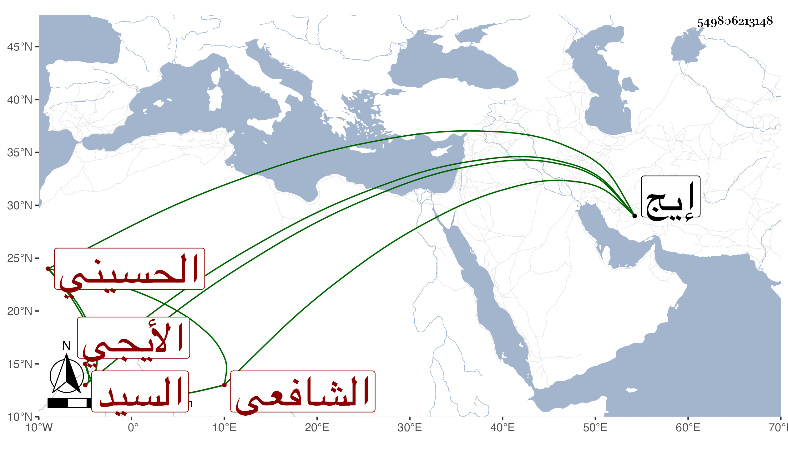

0902Sakhawi.DawLamic.ITO20230111-ara1.EIS1600.549806213148
Biography ID: 549806213148
748
محمد بن عيسى بن محمد بن محمد بن عبد الله السيد مرشد الدين بن قطب الدين بن عفيف الدين الحسيني الأيجي الشافعي الماضي أبوه . ولد في سنة سبع وأربعين وثمانمائة بأيج واشتغل وتميز وربما أقرأ وممن أخذ عنه على عيان بن محمد ابن محمد بن محمد الماضي .
